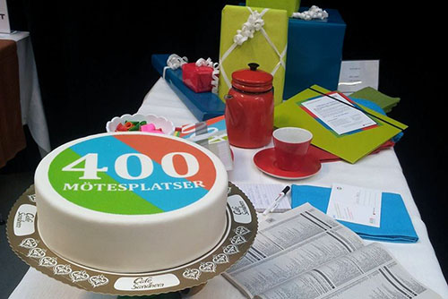
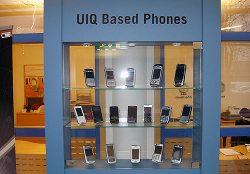

Projects
400 Mötesplatser
400 Mötesplatser was a project that was started under the auspices of Folkuniversitetet, ahead of Kristianstads 400th anniversary.
UIQ
UIQ Technology AB, formerly Symbian AB, was a Swedish telecommunications and software company operating in Ronneby, which among other things developed UIQ, a software platform and a user interface for mobile phones. The company started its operations in 1998, went bankrupt in 2008 and was located in the Soft Center in Ronneby.